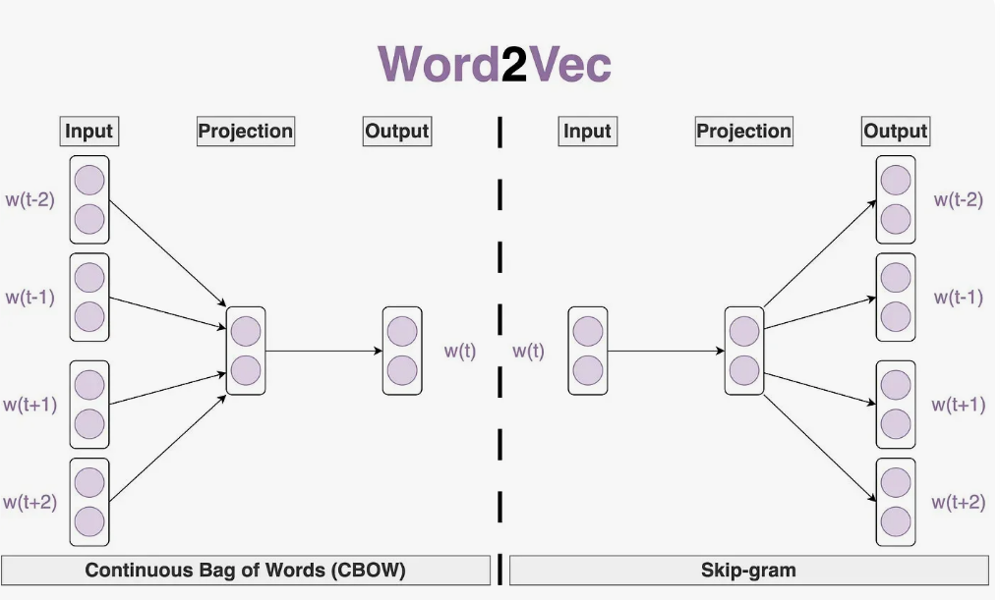
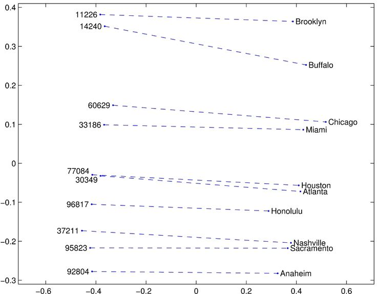
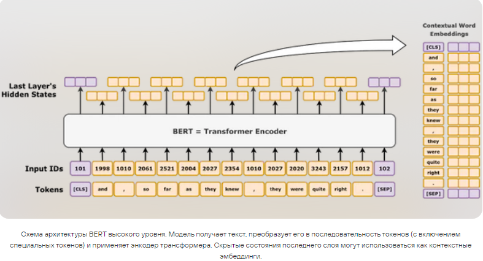
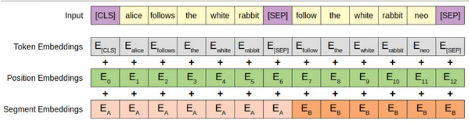
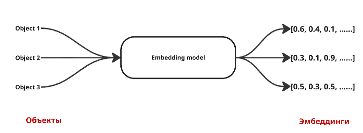

1. От дискретных символов к непрерывным векторам
Текст для компьютера — это просто последовательность символов. Чтобы алгоритмы машинного обучения могли работать с текстом, его необходимо преобразовать в числовой вид. Эта задача — одна из ключевых в области обработки естественного языка, и от качества числового представления напрямую зависит успех решения любой NLP-задачи.
Традиционные подходы, такие как One-Hot Encoding или Bag-of-Words, имеют фундаментальный недостаток: они не отражают смысловые связи между словами. При One-Hot Encoding каждое слово в словаре представляется бинарным вектором, где единица стоит только на одной позиции, соответствующей этому слову, а все остальные позиции заполнены нулями. В результате слова «кошка» и «кот» оказываются такими же разными, как «кошка» и «космос», поскольку их векторы не пересекаются ни по одной позиции. Кроме того, такие представления имеют огромную размерность — равную размеру словаря, который может достигать сотен тысяч слов, — и являются крайне разреженными, что делает их неэффективными для обучения.
Решение этой проблемы — эмбеддинги (от англ. Embedding — вложение). Это способ представления слов, предложений или целых документов в виде плотных векторов фиксированной и сравнительно небольшой длины (обычно от 50 до 1024 чисел), состоящих из вещественных чисел. Главное свойство эмбеддингов заключается в том, что семантически близкие слова располагаются близко друг к другу в векторном пространстве. Расстояние между векторами можно вычислять, и оно будет отражать степень смысловой близости соответствующих слов.
В основе этой идеи лежит дистрибутивная гипотеза, сформулированная ещё в середине XX века американским лингвистом Джоном Фёртом: «Слово характеризуется окружением, в котором оно встречается». Иными словами, «скажи мне, кто твой друг, и я скажу, кто ты». Если два слова часто встречаются в схожем контексте (рядом с одними и теми же словами), они, скорее всего, имеют близкое значение. Эта простая, но глубокая идея легла в основу всех современных методов получения эмбеддингов.
2. Статические эмбеддинги: Word2Vec и GloVe
Первыми широко распространёнными моделями для получения качественных эмбеддингов стали Word2Vec, предложенный Google в 2013 году, и GloVe, разработанный в Стэнфордском университете. Эти модели называются статическими, потому что каждому слову в словаре ставится в соответствие один единственный вектор, который не меняется в зависимости от контекста использования слова.
Word2Vec обучает векторы слов с помощью простой нейронной сети, и существует в двух основных архитектурах. Первая архитектура — CBOW (Continuous Bag-of-Words) — предсказывает текущее слово по его контексту, то есть по окружающим словам. Например, пропустив слово в предложении, модель пытается угадать его, глядя на соседей слева и справа. Вторая архитектура — Skip-gram — работает наоборот: по заданному слову она предсказывает слова, которые могут встретиться в его окружении. Обе архитектуры в процессе обучения на огромных корпусах текстов настраивают веса нейронной сети так, что слова со схожим контекстом получают схожие векторные представления.

GloVe (Global Vectors for Word Representation) использует иной принцип. В отличие от Word2Vec, который опирается только на локальный контекст в пределах скользящего окна, GloVe использует глобальную статистику совместной встречаемости слов во всём корпусе текстов. Это позволяет ему сочетать преимущества метода «мешок слов» (учёт глобальных частот) и нейросетевых подходов (обучение плотных представлений). На практике обе модели показывают сопоставимые результаты, и выбор между ними часто определяется доступными вычислительными ресурсами и личными предпочтениями.

vector("король") — vector("мужчина") + vector("женщина") ≈ vector("королева")
Это знаменитый пример, демонстрирующий, что эмбеддинги действительно кодируют смысловые отношения.
3. Контекстуальные эмбеддинги и модели-трансформеры
Главное ограничение статических эмбеддингов — неспособность обрабатывать полисемию, то есть многозначность слов. Слово «ключ» будет иметь один и тот же вектор независимо от того, идёт ли речь о ключе от двери, гаечном ключе, роднике, скрипичном ключе или ключе к разгадке тайны. Это серьёзная проблема, поскольку в естественном языке многозначность встречается повсеместно.
Эту проблему решают контекстуальные эмбеддинги, которые генерируются моделями на основе архитектуры трансформер, самой известной из которых является BERT (Bidirectional Encoder Representations from Transformers), предложенный Google в 2018 году. В таких моделях вектор для одного и того же слова будет разным в зависимости от окружающих его слов. Модель «смотрит» на весь контекст одновременно и слева, и справа (именно поэтому она называется двунаправленной) и создаёт уникальное представление для каждого вхождения слова.

Принцип работы трансформера основан на механизме внимания (attention). Вместо того чтобы обрабатывать текст последовательно слово за словом, как это делали рекуррентные сети, трансформер рассматривает все слова предложения одновременно и вычисляет «веса внимания», показывающие, насколько каждое слово связано с каждым другим. Это позволяет модели улавливать самые тонкие смысловые связи на больших расстояниях внутри текста. И именно благодаря этому механизму контекстуальные эмбеддинги могут корректно различать разные значения многозначных слов.
В предложениях «Я открыл дверь ключом» и «Из-под земли бил горный ключ» вектор слова «ключом» будет разным. В первом случае он будет близок к векторам слов «замок», «отмычка», «дверь», а во втором — к векторам «родник», «вода», «источник».
Сегодня контекстуальные эмбеддинги стали стандартом в большинстве современных NLP-систем, включая RAG. Они существенно превосходят статические эмбеддинги по качеству, особенно на задачах, требующих тонкого понимания смысла.
4. От слов к предложениям: получение эмбеддингов для фрагментов текста
Для задач информационного поиска и RAG нам нужны векторы не для отдельных слов, а для целых фрагментов текста — чанков, которые могут быть абзацами или даже небольшими документами. Существует несколько способов получить из словесных эмбеддингов вектор для всего фрагмента.
Первый и самый простой способ — усреднение (mean pooling). Нужно взять все векторы слов в предложении и вычислить их среднее арифметическое. Этот метод часто даёт неплохие результаты, особенно для коротких текстов, хотя он теряет информацию о порядке слов и не различает предложения с одинаковым набором слов, но разным смыслом, например «кот съел мышь» и «мышь съела кота».
Второй способ — использование специального токена [CLS], который добавляется в начало каждого предложения при обучении моделей семейства BERT. На выходе модели вектор этого токена предназначен для представления всего предложения целиком. Этот метод обычно работает лучше простого усреднения, так как модель учится «сворачивать» смысл предложения в этот специальный токен в процессе обучения.

Третий и наиболее эффективный подход на сегодняшний день — использование специализированных моделей из библиотеки sentence-transformers. Эти модели, такие как all-MiniLM-L6-v2 для английского языка или cointegrated/rubert-tiny2 для русского, специально обучены на задаче поиска семантически близких текстов. Они оптимизированы для того, чтобы векторы семантически похожих фрагментов были близки в векторном пространстве, и показывают лучшие результаты на задачах информационного поиска.
5. Оценка качества и выбор модели эмбеддингов
При выборе модели для генерации эмбеддингов необходимо учитывать несколько факторов, которые влияют как на качество поиска, так и на производительность системы в целом.
Первый фактор — размерность эмбеддингов. Векторы большей размерности, например 768 или 1024, способны передавать более тонкие смысловые оттенки, но они требуют больше памяти для хранения и больше вычислительных ресурсов при поиске. Векторы меньшей размерности (например, 312, как у rubert-tiny2) работают быстрее и занимают меньше места, но могут терять некоторые смысловые нюансы. Выбор всегда представляет собой компромисс между качеством и производительностью.

Второй фактор — тип модели. Для простых задач классификации тем могут подойти быстрые и лёгкие статические эмбеддинги. Для сложных задач, где контекст критичен — а RAG именно к таким и относится — необходимы контекстуальные модели, способные учесть окружение слов.
Третий фактор — предметная область. Универсальные модели хорошо работают с общеупотребительной лексикой и текстами общего содержания. Для узкоспециализированных областей, таких как медицина, юриспруденция или техническая документация, лучше использовать модели, дообученные (fine-tuned) на соответствующих корпусах текстов, поскольку они будут лучше понимать специфическую терминологию и стиль изложения.
Оценить качество эмбеддингов можно по-разному. Самый надёжный, но и самый трудоёмкий способ — оценка на конечной задаче, например, по точности поиска в RAG-системе. Также существуют стандартизированные бенчмарки, такие как MTEB (Massive Text Embedding Benchmark) или BEIR (Benchmarking IR), которые позволяют сравнить модели на эталонных наборах данных. В таблице ниже приведены основные методы оценки качества эмбеддингов с их преимуществами и недостатками.
| Метод оценки | Описание | Преимущества | Недостатки |
|---|---|---|---|
| Бенчмарки (MTEB, BEIR) | Стандартизированные наборы тестов | Быстрая первичная оценка, воспроизводимость | Не всегда отражают специфику вашей задачи |
| Ручная разметка | Эксперты оценивают релевантность пар | Высокая точность, учёт специфики | Высокая стоимость, трудоёмкость |
| Оценка на конечной задаче | Замер метрик RAG-системы | Самая честная оценка для вашего случая | Требует полностью собранной системы |
Вопросы для самоконтроля
- В чём преимущество эмбеддингов перед One-Hot Encoding?
- В чём различие между статическими (Word2Vec) и контекстуальными (BERT) эмбеддингами?
- Как контекстуальные эмбеддинги решают проблему многозначности слов?
- Какие способы получения вектора для целого предложения существуют?
- Как оценить качество модели эмбеддингов для вашей задачи?